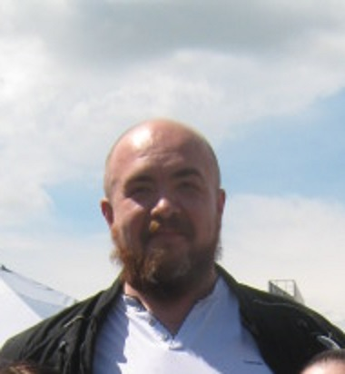

UA
EN
Дмитро Сулим
CV

Персональна інформація
Місто :
Львів
Телефон :
+38 (063) ***-***-**
Електронна пошта :
********@gmail.com
Linkedin
Навички
Quality Control
.NET
Loyalty programs
Requirments anlytics
Manual\automation testing
Configuring & maintaining network services
Освіта
Технічний колледж НУ Львівська полтіехніка
Програмування для ЕОМ і АСУ
2002-2006
Quality Assuance Group
Manual Test Engineer
2016-2016
SoftServe Academy
.NET basics
2018-2018
Betroot academy
C# Розробка
2021-2022
Досвід роботи
"Fishka Loyalty"
Tech lead
2014-п.т.ч.
Обов'язки:
Requrements development.
Risks analysis.
Bridge apps development